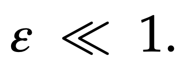
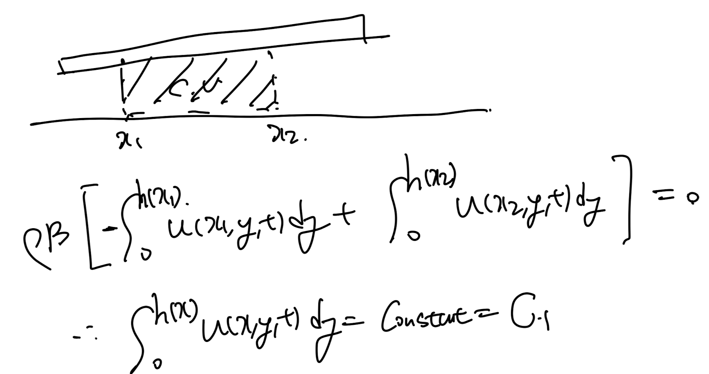
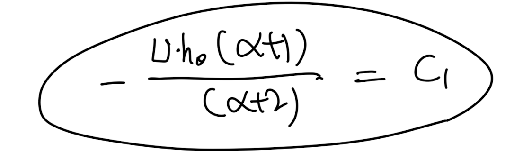
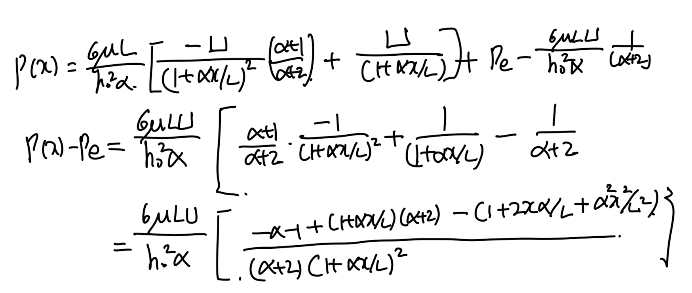

Ch4 Laminar flow - lubrication Theory
바닥과 윗면의 두께가 h(x,t)
시공간에 따라 변하는 상황에서
그 사이에 유체가 흐른다고 가정해보자.
[Assumptions]
-Incompressible
-Unsteady 2D flow.
-
Ex) 윤활유

lubrication geometry
여기서 geometry의
x축 길이를 L이라고 했을때,
e = h/L이라고 정의하며,
common lubrication geometry는
다음의 h가 L에 비하여 매우 작다.

이 상황에서, exact solution이 아닌
approximation solution을
유도해보자.
(속도,압력)
방법은 order of magnitude이다.
각 항들 끼리의 상대적인 크기를 비교하여,
비교적 큰값들만 의미를 가지므로
큰 값들만을 식에서 남기고
나머지는 소거하는 방식이다.
실제 진행해보면 무슨말이니 바로
이해할 수 있다.
먼저,연속방정식을 통해서
y방향 속도 v의 상대적인 크기를, Ue로 나타 낼 수 있다.
O(x)는 x의 크기를 나타내는 함수.

이후, x방향 모멘텀 보존식에 상대적인 크기를
알기 위해서, 다음의 무차원수들로 변환후 대입해주자.
여기서 V의 상대적인 크기는
위의 연속방정식에서 구한 Ue를 대입해준다.

이제 무차원수들을 밑의 모멘텀방정식에 대입해주자.


쭉 정리후, e^2 = 0 임을 이용하면,
전체적으로 2항 (압력, 점성항)
만 남고 나머지는 비교적 작은 크기의 항들인 것이다.
따라서, 모멘텀 x방향에서는
두항만이 상대적으로
크기(의미)를 가지고 있다는 것을 알 수 있다.
정확히 같은 방식으로 y방향 모멘텀식도
적용해주면,,
압려항 이외에는 전무 상대적으로 작은 값임을 알 수 있다.

따라서, 두 방정식의 의미있는 항만 남겨보면,
다음과 두 식으로 정리된다.


x방향 모멘텀 방정식으로 유도
y방향 모멘텀 방정식으로 유도
첫번째 식을 y에 대하여 적분해주면,

a = a(x,t), b = b(x,t)
이후 Boundary condition으로
상수들을 구해주자.

계수들을 대입해주면,
최종적으로 속도는
다음과 같이 정리된다.

이번에는 한단계 더 나아가서,
윗면이 기울어져 있고,
일정한 속도 U로 움직이며,
위에서 W의 힘으로 누르고 있는 상황에서
속도,압력,W를 구해보자.
[A slopped bearing pad problem]

위 문제를 반대로, 바닥면에 U로 -x방향으로 이동하고 있다고
생각해보자.
Uh = 0, U_0 = -U

조건들을 대입하여,
위에서 구한 lubrication
일반 속도해는 다음과 같이 정리된다.

이제, 압력장을 구해보자.
여기서 fixed control volume에서
들어오고 나가는 유체의 양은 동일하므로
(질량보존)

먼저, C1은 다음과 같이 유도된다.

이를 dp/dx로 정리한후,
x에 대하여, 적분을 진행해주자.

우리는 기울어진 slope = alpha로
설정하여, h(x)의 함수를 알기 때문에,
다음과 같이 적분이 가능하다.

적분항을 위의 압력식에 대입해주고 정리하면 다음과 같다.
이후, 상수 C1, C2를 구하기 위해 BC를 사용하자.

각 x=0, x=L대입후 정리

두식을 빼주어, C2를 제거하여 C1을 먼저 구하자.


이후 다시 연립방정식에 C1을 대입해주면, C2유도된다.

이제 구한 상수들을 원래 압력식에 대입해주고 정리해주면,



드디어 압력 유도완료...
알파 . 즉 기울기가 굉장히 작은 경우로 가정하면,
맨오른쪽의 분모항 = 1/2 라고 가정할 수 있다.
따라서, 정리된 식은:

위에서 눌러주어야 하는 힘의 크기
=
유체의 압력이 위로 올리는 힘
- 밖의 대기압이 밑으로 누르는 힘
따라서, 밑으로 눌러주어야 하는 힘(W)는 다음과 같다.